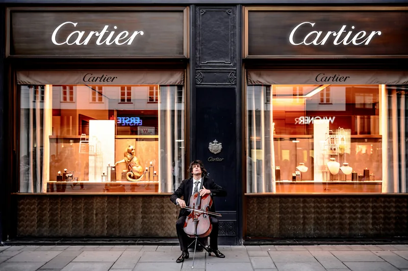

The Auction Block · 2026
In Hong Kong, a watch almost no one can identify — and almost no one can buy — became the most valuable Cartier ever sold. It runs on a battery. That’s the least surprising thing about it.
Every auction result we report is verified against the auction house before we publish — sources checked, never bought.
On 18 September 2026, at Sotheby’s Important Watches sale in Hong Kong, a unique white-gold Cartier “Cheich” — a rare shaped Cartier trophy watch created in 1983 for the Paris-Dakar Rally — sold for HK$26.52 million, about US$3.4 million with fees (Sotheby’s). That made it the most valuable Cartier wristwatch ever sold at auction — the most expensive Cartier watch on record — beating a mark Cartier itself had set just five months earlier, in April 2026. It is also, quietly, the most valuable quartz watch ever sold. In a market that worships mechanical movements, a battery-powered Cartier just outran all of them — and the reason it did tells you exactly where the money is going in 2026. This is the market as we read it, week to week, across the 75 verified dealers in our Watch Finder and the major auction houses.

One of a handful in existence — and the only one in white gold.
The lot was a Cartier Cheich in white gold, a unique piece made in 2010 and commissioned by Giorgio Seragnoli, a co-author of the reference book Cartier Bianco and one of the foremost collectors of white-metal Cartier in the world. It is one of only a handful of Cheich watches in existence, and the sole example cased in white gold (SJX Watches).
At Sotheby’s Hong Kong on 18 September 2026 it realised HK$26.52 million, roughly US$3.4 million including buyer’s premium — a new world record for any Cartier wristwatch sold at auction, and, because the Cheich is quartz-powered, the most valuable quartz watch ever sold (National Jeweler). It topped the previous Cartier record, set in April 2026 by a 1987 London Crash that sold for about US$2 million (Robb Report) — a watch we’ve told the story of before.
The Cheich isn’t a product. It’s a prize almost no one was allowed to win.
The Cheich was never sold in a boutique. It was born in 1983 as the trophy for “The Cartier Challenge” at the Paris-Dakar Rally — conceived by then-Cartier chief Alain-Dominique Perrin and rally founder Thierry Sabine. To win it, a competitor had to take the same category two years running, an almost impossible feat across thousands of kilometres of Sahara. Only a few examples were ever made, and fewer still awarded, which is why collectors call it a genuine unicorn.
Even the name is desert. “Cheich” (French chèche) is the long indigo headscarf worn by the Tuareg — the “blue men” of the Sahara — and the Paris-Dakar logo itself was a Tuareg face wrapped in one. The watch’s soft, shield-like shaped case is pure early-1980s Cartier: sculptural, unrepeatable, and utterly unlike anything else on a wrist. It is, in other words, exactly the kind of object this market has decided it wants.
A quartz watch, made in a handful, for a desert rally most collectors have never heard of — and now the most valuable Cartier ever made.
Notice what these watches have in common. It isn’t the movement.
| The watch | Result | The read |
|---|---|---|
| Cartier Cheich, white gold (Sotheby’s HK, Sep 2026) | ~ US$3.4M | Unique, quartz, desert-rally provenance |
| Cartier London Crash, 1987 (Sotheby’s HK, Apr 2026) | ~ US$2M | The record the Cheich just beat |
| Cartier Cheich, yellow gold (Sotheby’s Paris, 2022) | > US$1M | The last time a Cheich surfaced publicly |
Approximate hammer-plus-premium results, rounded. Cheich, Sep 2026: SJX, National Jeweler. London Crash, Apr 2026: Robb Report. Yellow-gold Cheich: Sotheby’s Paris, 2022. Auction figures vary by sale, currency and the day — always confirm the real number before you act on it.
Not one of those records was set by a movement. The Crash is a hand-wind, the Cheich a quartz, and the market paid a premium for both because of rarity, shape, story and provenance — the things a spinning rotor can’t manufacture. That is the same force we traced in the 2026 market split: the money has stopped chasing brands and movements, and started chasing scarcity and story wherever it finds them.
It also rewrites an old snobbery. Collectors have long treated quartz as the poor relation of mechanical watchmaking — a footnote of the 1970s crisis, not a thing to covet. Yet the Cheich shows that when a watch is rare and artful enough, the movement inside it barely enters the conversation. What the market is buying here is a shape, a story and a provenance that cannot be reissued; the calibre is a detail on the spec sheet, not the reason for the price.
The signal is shaped, scarce, and full of story — and it runs all the way down the Cartier range.
Almost no one reading this will bid on a Cheich. But the lesson it teaches is one you can act on at every level of the Cartier range. The house’s shaped, artistic references — the Crash, the Tank Cintrée, the Pebble, the Tank Asymétrique — are exactly the pieces this market rewards, because they carry the two things it now pays for: a distinctive shape you can’t find elsewhere, and a story worth retelling.
The trap is the opposite piece: a common, late-production Cartier bought on the badge alone, where there is no scarcity to hold the number up. As always, the reference and its provenance matter far more than the name on the dial — the same discipline that runs through our Patek vs Rolex and grail comparison analyses.
And if you’re quietly hunting a shaped or vintage Cartier of your own, that’s exactly what we do: a plain-English read on whether the exact reference is fair value, realistically findable, and worth chasing — before you spend a dollar going after it.
Your next move
Behind the curtain
Chasing a shaped or vintage Cartier of your own? Whether it’s fair value — and where to actually find one is exactly what our concierge reads for you.
Have us find yours →